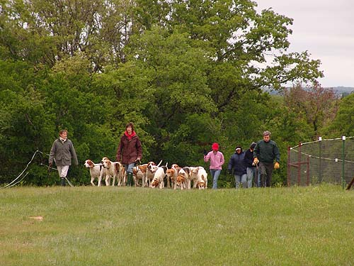

HCH
Hounds

Informal April RoadingWe were so
cold we didn't notice how green and pretty everything looked.
HCH
maintains a pack of American and Crossbred hounds
at its kennel in Boyd, Texas. As are hounds everywhere, HCH hounds are
bred for the country and the game. In Texas we need a good cold-nosed hound
to pick up the scent in our hot, dry climate. We need speed to keep up
with coyote and durability to stand up to the terrain. American and Crossbred
hounds answer our needs.
The
breeding program is one of the most important undertakings of the Hunt.
The objects are always to improve the pack, do credit to the breed, and
to preserve the venerable bloodlines that modern foxhounds represent. These
bloodlines are carefully studied and foxhounds are watched closely in fall
and winter for performance in the field.
Decisions about breeding are based on these observations. Members
of a litter bear names with the same first letter, usually the first letter
of the name of either the sire or dam. This helps sort them out, both in
the kennel and in the field. Since 2002, HCH has been naming the litters
for Texas counties.
Foxhounds
are counted in couples, or two at a time. A couple is composed of any two
hounds at any time regardless of sex, relationship or friendship. The pack
is usually of mixed sex, although same sex packs are hunted. A female hound
is called a bitch, a male hound is called a dog, and the young are called
puppies.